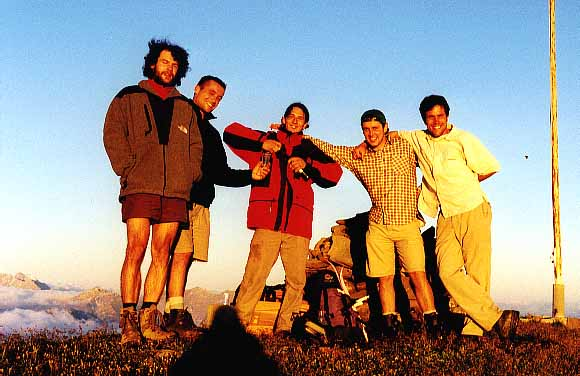
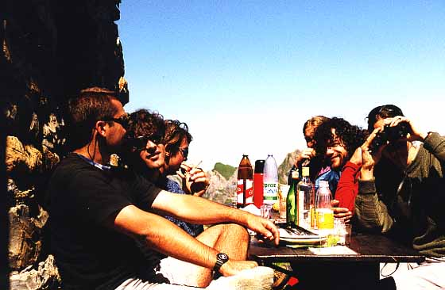
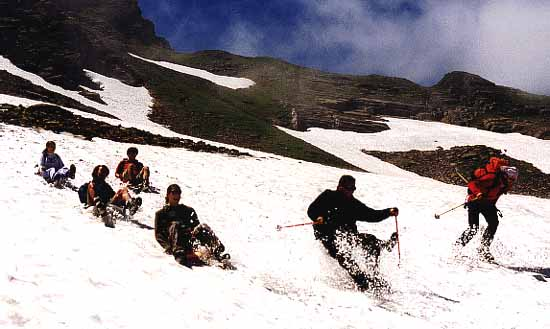
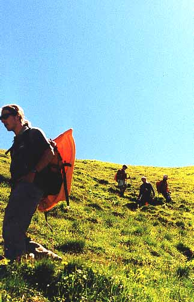

Wenn wir erklimmen...

Sonnenuntergang auf dem Alvier (ohne Sonne, dafür mit Sulaj's Schatten)
Die traditionelle Alvierwanderung der Jeeminees

Vor der Hütte, da ists lustig...

Runter geht es immer schneller!

Mc "le bob" Fly